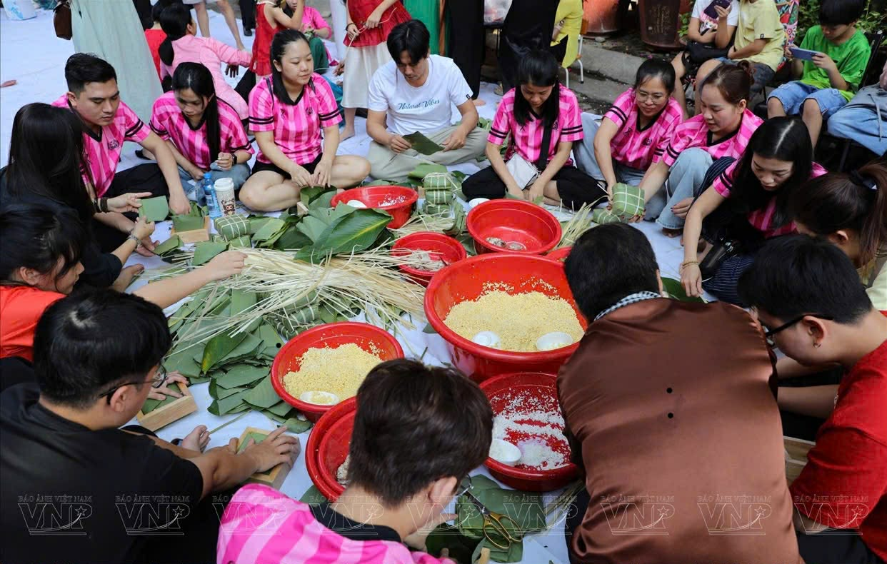
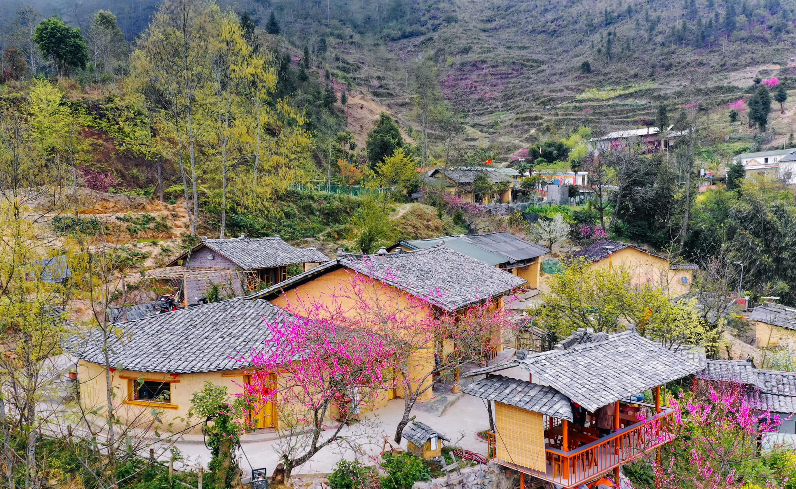

Những chặng đường đã qua
Trong khuôn khổ chương trình "Xuân Yêu Thương", tuổi trẻ nhà trường đã tổ chức chuỗi những hoạt động vô cùng sôi nổi và đầy tính nhân văn.
Năm nào cũng vậy, cứ mỗi dịp Tết đến xuân về, công tác chuẩn bị của "Xuân Yêu Thương" lại bắt đầu từ rất sớm. Không khí náo nức bao trùm khắp các hành lang, lớp học. Đầu tiên là chiến dịch quyên góp sách vở, quần áo cũ còn sử dụng được. Các bạn học sinh không ngần ngại tự tay giặt ủi cẩn thận những chiếc áo ấm trước khi đóng gói gửi đi.
Hành trình năm nay được ghi dấu bởi những sự kiện rất đáng nhớ. Chuyến xe rong ruổi qua những cung đường đèo hiểm trở đã đưa những tình nguyện viên trẻ tuổi tới những vùng sâu vùng xa. Tại đây, chúng tôi đã tự tay sơn sửa lại một điểm trường cấp 1, mang lại không gian học tập sạch đẹp hơn cho các em nhỏ. Những giọt mồ hôi rơi xuống nhưng trên môi ai nấy đều nở nụ cười rạng rỡ.
Chưa dừng lại ở đó, rất nhiều hoạt động thú vị khác như tổ chức sân chơi "Hội chợ tuổi thơ", trao tặng học bổng "Vượt khó" cũng được diễn ra, mang lại nhiều tín hiệu tích cực cho trẻ em nghèo.

Gói bánh chưng xanh, ấm lòng ngày Tết
Một trong những khoảnh khắc được mong chờ nhất là ngày hội gói bánh chưng. Thầy cô và hàng trăm học sinh cùng nhau ngồi lại, chia lá dong, đong nếp, nêm đỗ xanh và nhân thịt. Từng chiếc bánh chưng xanh vuông vắn được gói ghém cẩn thận, chứa đựng bên trong là tình cảm chân thành để gửi đến những gia đình khó khăn, giúp họ có một mâm cỗ Tết tươm tất hơn.

Trao tận tay những phần quà nghĩa tình
Song song với việc tổ chức nấu bánh, đội tình nguyện đã phân loại hàng trăm suất quà gồm nhu yếu phẩm như gạo, dầu ăn, nước mắm và các phần quà đặc biệt cho trẻ em. Những cái ôm thắm thiết, những cái bắt tay thật chặt khi đại diện nhà trường trao đi yêu thương chính là bức tranh đẹp nhất trong suốt hành trình của dự án.